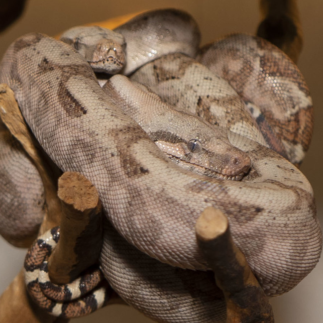
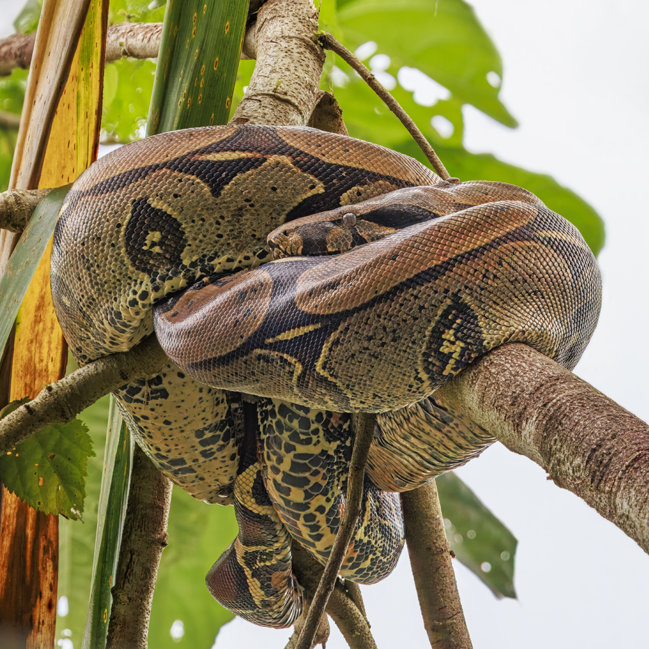
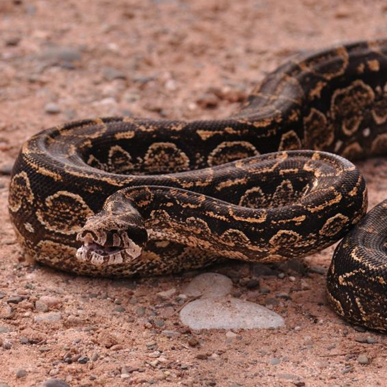
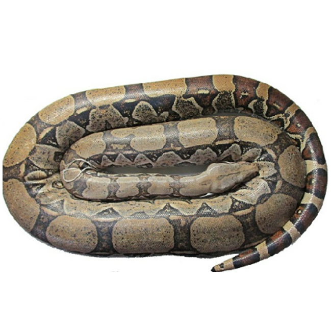
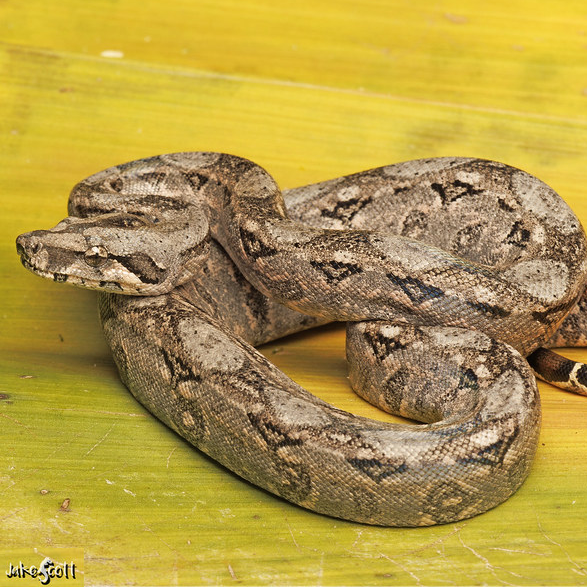
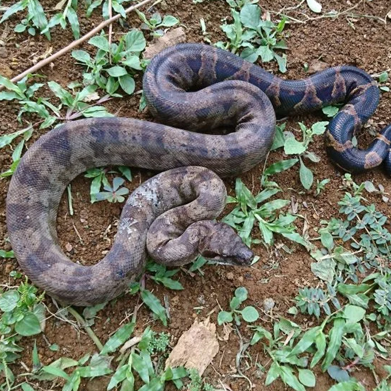
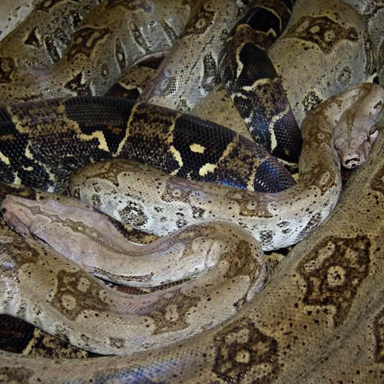

Durante mucho tiempo fue considerada una subespecie, pero hoy en día los estudios de ADN la reconocen como una especie independiente por derecho propio. A diferencia de la boa de cola roja (Boa constrictor), suele ser de un tamaño más moderado y compacto, con diferencias visibles en el diseño de las manchas de su lomo. Su hábitat abarca desde el este y sur de México (incluyendo la costa del Golfo y la península de Yucatán), cruzando toda América Central hasta llegar a Colombia y Ecuador. Por su carácter dócil y la increíble variedad de colores y patrones (morfos) que presenta, es la boa más famosa y criada del mundo.
Boa imperator
Boa de América Central / Boa común

Localidad insular destacada: Boa de Cayos Cochinos / Islas Hog (Hog Island)
Las célebres boas de las islas Hog (o Cayos Cochinos, en Honduras) no constituyen una especie ni una subespecie independiente, sino una fascinante población insular perteneciente a Boa imperator. Aunque los estudios de ADN confirman que comparten origen con las boas de América Central, la vida en el archipiélago las transformó por completo: al disponer de presas limitadas en las islas, desarrollaron un proceso de enanismo insular que redujo su tamaño a tan solo 1.2 o 1.5 metros y aclaró su piel con tonos pálidos y salmón de increíble belleza. Por su fragilidad ecológica y su valor biológico único, hoy cuentan con una estricta protección legal.

Boa constrictor
Boa de cola roja
Es la especie representativa y el gran referente del género, habitando la mayor parte de América del Sur al este de la cordillera de los Andes (en países como las Guayanas, Venezuela, Colombia, Brasil, Ecuador, Perú y Bolivia). Se diferencia claramente de las boas de México y Centroamérica (Boa imperator y Boa sigma) por alcanzar un tamaño considerablemente mayor —con hembras adultas que pueden superar los 3 metros— y por el deslumbrante color rojo intenso, caoba o magenta en las manchas de su cola. Conocida en todo el mundo como la verdadera boa de cola roja (red-tailed boa), es una de las serpientes más admiradas por los apasionados de los reptiles gracias al enorme valor y belleza de sus variedades silvestres puras, como las afamadas localidades de Surinam, Guyana o Perú.

Un par de subespecies de Boa constrictor
Debido a su amplia distribución geográfica en Sudamérica, Boa constrictor presenta distintas subespecies y linajes regionales bien documentados. Conoce algunas de ellas:
Boa constrictor occidentalis (Boa de las vizcacheras): Es la boa de distribución más meridional del continente, adaptada para habitar en los climas más fríos y secos de Argentina y Paraguay. Destaca de inmediato por su elegante patrón reticulado en tonos oscuros y grisáceos, así como por su increíble resistencia. Aunque recientemente se propuso considerarla como una especie independiente, los estudios más recientes confirman que se trata de una subespecie oficial dentro del complejo Boa constrictor. Debido a la fragilidad de sus poblaciones silvestres, cuenta con el máximo nivel de protección internacional (Apéndice I de CITES).

Boa constrictor atlantica (Boa de la Mata Atlántica): Esta singular variedad de boa habita únicamente en la franja costera del oriente de Brasil, adaptada a la frondosa selva de la Mata Atlántica. Aunque en 2024 se propuso considerarla como una especie independiente, revisiones genéticas y científicas más recientes redefinieron su clasificación, manteniéndola oficialmente como una subespecie dentro del gran grupo de Boa constrictor.

Boa sigma
Boa del Pacífico mexicano
Aunque a simple vista es prácticamente idéntica a Boa imperator, los análisis de ADN confirmaron que la boa del Pacífico mexicano es una especie plenamente independiente. Su principal sello distintivo es su origen: habita de forma exclusiva a lo largo de la costa del Pacífico de México, extendiéndose desde Sonora hasta Oaxaca. En la herpetocultura mexicana, su cría en cautiverio ha tomado un fuerte impulso dentro de criaderos legales (PIMVS y UMA), donde los aficionados y biólogos locales la valoran enormemente por lo que representa reproducir y conservar una especie endémica.

Boa nebulosa
Boa de Dominica
Si hay una serpiente que parece moldeada por las propias brumas de su entorno, es la boa de Dominica. Bautizada precisamente por su diseño "nublado", sus tonos grises y café se difuminan en degradados suaves que rompen por completo con los patrones geométricos tradicionales del género. Habita de forma exclusiva en el interior boscoso y montañoso de esta isla caribeña, habiendo consolidado su estatus de especie independiente mediante análisis genéticos. Al ser su ecosistema tan susceptible al azote de huracanes y a la presión humana, se encuentra bajo un resguardo legal severo, manteniéndose como una de las boas más enigmáticas y raras de ver.

Boa orophias
Boa de Santa Lucía
Es una joya del Caribe que habita exclusivamente en las selvas de la isla de Santa Lucía. Llama la atención por sus tonos café y grisáceos adornados con marcados bloques oscuros de alto contraste, un camuflaje perfecto para pasar desapercibida entre la hojarasca del bosque. Aunque durante años se le consideró una simple subespecie, la genética moderna confirmó su estatus como una especie independiente por derecho pleno. Hoy en día, la destrucción de su hábitat y la llegada de depredadores invasores (como la mangosta) la mantienen en un estado crítico de conservación, por lo que cuenta con una estricta protección internacional y está totalmente fuera del circuito de la herpetocultura comercial.
